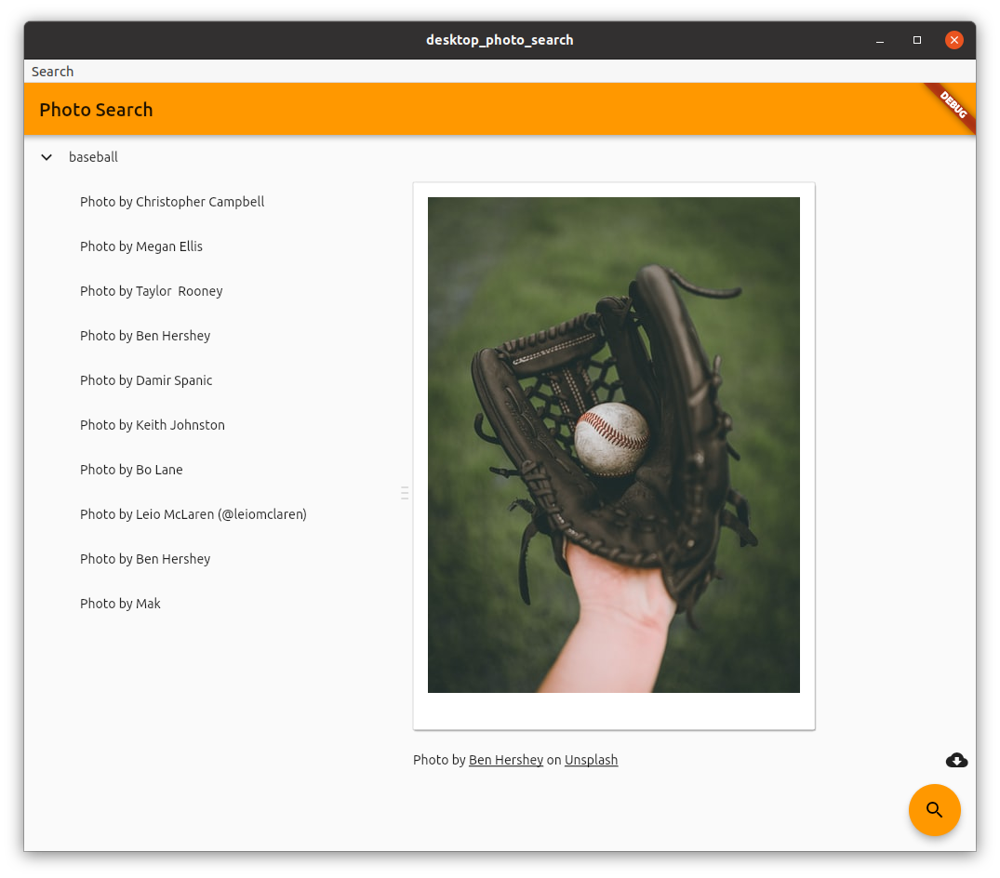

谷歌开发者官文
https://mp.weixin.qq.com/s/EzS3dtpZB_i9p358qqlBpg
7 大平台 -> windows、macos、linux、web、embedded、ios、android
web 平台优化、进入稳定版
3 个方向
- pwa: 缓存、push 推送服务、桌面快捷、消息提示
- spa: 单页程序类似 vue rect
- expanding mobile: 快速迁移 app、复用代码
irobot 构建基于 flutter
https://edu.irobot.com/the-latest/building-a-coding-experience-for-all
- 技术架构
2D 3D 渲染 WebGL Skia WebAssembly Canvas
- 稳定的版本
性能
HTML renderer: HTML 渲染器: Uses a combination of HTML elements, CSS, Canvas elements, and SVG elements. This renderer has a smaller download size. 使用 HTML 元素、 CSS、 Canvas 元素和 SVG 元素的组合
CanvasKit renderer: CanvasKit 渲染器: This renderer is fully consistent with Flutter mobile and desktop, has faster performance with higher widget density, but adds about 2MB in download size.
试水项目
canonical 支持
https://medium.com/flutter/announcing-flutter-linux-alpha-with-canonical-19eb824590a9
Canonical 公司是一个私营公司，由南非的企业家马克·沙特尔沃思创建，主要为了促进开源软件项目。 Canonical 在马恩岛登记注册，其雇员分布在世界各地，其主要办事处在伦敦，在蒙特利尔也有办事处。Canonical 公司支持并创建了几个项目，主要都是自由/开源软件（FOSS）或是一些旨在改善自由软件开发者和贡献者的工具。
why canonical 大力推 flutter !，主要以下几点
- 快速增长的 flutter 应用
- 多平台支持
- 设备优化的好
- 丰富的组件库
- IDE 环境成熟 Visual Studio Code, Android Studio, and IntelliJ
简易安装
1 | $ snap install --classic flutter |
- 快速模板
1 | $ flutter channel dev |
现有项目升级
1 | $ cd my_flutter_app |
代码示例

教程 Write a Flutter desktop application
https://codelabs.developers.google.com/codelabs/flutter-github-graphql-client/index.html#0
组件库升级、对 ios 支持加强
新增 iOS 功能
CupertinoSearchTextField
https://api.flutter-io.cn/flutter/cupertino/CupertinoSearchTextField-class.htmlCupertinoFormSection、CupertinoFormRow 和 CupertinoTextFormFieldRow
https://api.flutter.cn/flutter/cupertino/CupertinoFormSection-class.html
https://api.flutter.cn/flutter/cupertino/CupertinoFormRow-class.html
https://api.flutter.cn/flutter/cupertino/CupertinoTextFormFieldRow-class.html整体性能优化
https://github.com/flutter/flutter/issues/60267#issuecomment-762786388
新增 Widget: Autocomplete 和 ScaffoldMessenger
AutocompleteCore
https://github.com/flutter/flutter/pull/62927
ScaffoldMessenger
https://github.com/flutter/flutter/pull/64101
Flutter for Surface Duo & 折叠屏
混合编程
https://flutter.cn/docs/development/add-to-app
过去，额外 Flutter 实例的内存占用量与第一个 Flutter 实例相同。在 Flutter 2 中，我们将创建额外 Flutter 引擎的静态内存占用量降低了约 99%，使每个实例的占用量大约为 180kB。
Dart Null Safety
Dart 是一种类型安全的语言，这意味着当开发者获取某种类型的变量时，编译器可以保证它是该类型，但是类型安全本身不能保证变量不是 null。
Null errors 非常常见的问题，在 GitHub 上 可以搜索到成千上万由于 null 导致 Dart 代码出现异常的问题，甚至有成千上万的 commits 试图解决这些问题。
1 | void main() { |
最后，个人的额外提醒，目前在根目录的 analysis_options.yaml 添加如下配置就可以开启 null safety，另外 Flutter 需要 dart sdk 2.9 。
1 | analyzer: |
flutter fix
- 统计
1 | dart fix --dry-run |
- 应用
1 | dart fix --apply |
flutter DevTools 开发工具升级
- 性能监控
https://flutter.dev/docs/perf/rendering/ui-performance
.vscode/launch.json
1 | { |
- Invert Oversized Images
DevTools 的另一个新功能是能够轻松发现所显示的分辨率低于其实际分辨率的图像，这有助于追踪应用过大和内存占用过多等情况。若要启用此功能，请在 Flutter Inspector 中启用 Invert Oversized Images。
- 弹性布局
Android Studio/IntelliJ 扩展
我们也为 IntelliJ 系列 IDE 的 Flutter 插件添加了一些适用于 Flutter 2 的新功能。首先，我们在其中新增了一个项目向导，该向导与 IntelliJ 中的新向导风格一致。
Visual Studio Code 扩展
适用于 Visual Studio Code 的 Flutter 扩展也针对 Flutter 2 进行了优化，我们首先引入了一些测试增强功能，例如重新运行失败测试的能力。
经过两年的逐步发展，对 Dart 的 LSP (语言服务器协议) 支持已经成为在 Flutter 扩展中将 Dart 分析器集成到 Visual Studio Code 中的默认方式。LSP 支持为 Flutter 开发带来了许多改进，包括在当前的 Dart 文件中应用特定的所有修复，以及能够补全代码以生成完整函数调用 (包括括号和所需参数) 的能力。
LSP 支持不仅限于 Dart，它还支持 pubspec.yaml 及 analysis_options.yaml 文件中的代码补全。
sentry 升级对 flutter 的支持
https://docs.sentry.io/platforms/flutter/
整合了对设备端错误的收集
upgraded firebase plugins for flutter
Flutter Community Plus Plugins
https://plus.fluttercommunity.dev/
google mobile ads for flutter

DartPad 升级到支持 Flutter 2
配置 flutter 2
- 下载 Dev channel (macOS)
https://flutter.dev/docs/development/tools/sdk/releases?tab=macos
- fvm 切换
https://github.com/leoafarias/fvm
复制 sdk 到 /Users/{youname}/.fvm/versions
1 | fvm list |
- 启用特性
1 | flutter config --enable-macos-desktop |
- 编译
1 | flutter run -d windows |
参考
- https://flutter.gskinner.com/
- https://github.com/gskinnerTeam/flutter-folio
- https://mp.weixin.qq.com/s/EzS3dtpZB_i9p358qqlBpg
- https://docs.sentry.io/platforms/flutter/
- https://snapcraft.io/flutter
- https://plus.fluttercommunity.dev/
- https://medium.com/flutter/flutter-web-support-hits-the-stable-milestone-d6b84e83b425
- https://rive.app/
- https://medium.com/flutter/announcing-flutter-linux-alpha-with-canonical-19eb824590a9
- https://www.windowscentral.com/surface-duo
© 猫哥
![微信分享二维码]()